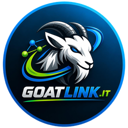

Chi siamo
GoatLink è il sito che avremmo voluto trovare quando abbiamo iniziato a fare bonus bancari: niente promesse gonfiate, niente requisiti nascosti alla riga 47 del regolamento. Ogni promo è verificata sul regolamento ufficiale alla data indicata sulla guida.
Come si sostiene GoatLink
Quando apri un conto con i codici o i link di queste pagine, la banca o la piattaforma riconosce a GoatLink un compenso. A te non costa nulla e il tuo bonus non cambia. È anche il motivo per cui possiamo permetterci di dirti quando un'offerta non conviene: se consigliassimo spazzatura, smettereste di fidarvi — e la fiducia è l'unico vero asset di questo sito.
Cosa non facciamo
Consulenza finanziaria o fiscale, promesse di guadagno, classifiche pagate. I prodotti restano prodotti finanziari: leggi sempre la documentazione ufficiale e, sulle crypto, ricorda che il valore oscilla.
Scrivici
Per qualsiasi dubbio su un'apertura c'è l'assistenza WhatsApp: ti accompagniamo fino all'accredito, gratis. Scrivici qui →
GOAT Team · assistenza.goatlink@gmail.com
Ultimo aggiornamento: